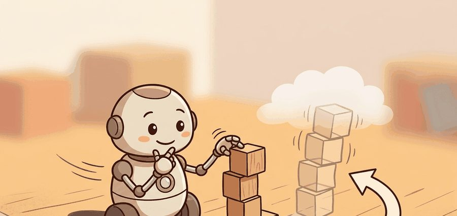
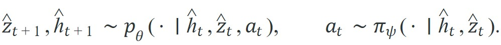
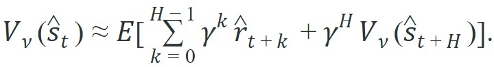
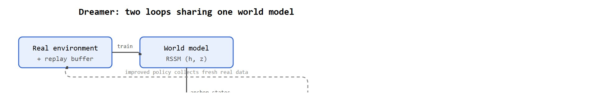

"The world model does not need to be right about everything; it needs to be right about what the policy will try next."
An Agent That Dreams On Purpose

A robot arm that fails a grasp in the real world needs another attempt, another reset, another minute of lab time. Dreamer breaks that bottleneck: after each real interaction the agent retreats into its latent world model, runs thousands of imagined grasps overnight, and arrives at practice the next day already better. Right now, as robotics shifts from lab demos toward continuous self-improvement, that ability to learn fast in simulation while staying grounded in reality is typically decisive for which approaches scale to real hardware. Here you will trace exactly how Dreamer builds the imagination loop, why DreamerV3 made it robust enough to transfer across radically different tasks, and what still breaks when the dream drifts from reality.
Track the data flow in two phases: posterior rollouts (latent states inferred from real observations, so they are anchored to what actually happened) from real replay for model learning, then prior rollouts (latent states sampled from the model's own predictions, with no real observation to check them) in imagination for behavior learning. The key question is what makes imagined updates useful rather than self-delusion.
Dreamer gains sample efficiency by spending model compute instead of environment interaction, but that bargain works only while imagined rollouts stay trustworthy enough for policy improvement.
Picture a robot arm that has failed the same grasp two hundred times on real hardware. Dreamer lets it practice the two hundred and first attempt entirely inside its own head, and often get it right. Dreamer turns a learned world model (a neural network that predicts how the environment evolves under the agent's actions, introduced in Section 38.2) into a behavior-learning engine, and DreamerV3 made that recipe robust across very different tasks. Once the world model exists, the next design choice is whether to use it only for local planning or also to generate synthetic experience for policy learning. Real robot interaction is expensive. So if the model generates sufficiently faithful imagined futures, the actor improves with many more gradient steps than hardware time would ever permit. A typical DreamerV3 run on a locomotion task uses roughly 1 million environment steps to reach expert performance; a model-free baseline needs 10 to 50 million steps on the same task, spending that gap entirely on real or simulated physics. Translated to a physical robot collecting 30-second episodes, that difference is roughly 300 real hardware trials versus 15,000: the first fits in a single afternoon lab session, the second requires months of continuous operation.
Reaping that hundred-fold interaction saving depends entirely on the internal representation that generates the imagined futures, so the machinery of that representation is where the design work begins.
The Recurrent State-Space Model (RSSM) backbone matters for physical robots because it separates deterministic memory (the recurrent state $h_t$) from stochastic uncertainty (the sampled latent $z_t$). On a real robot, sensors are noisy and contacts are partially observable; keeping explicit stochastic latents lets the model represent multiple plausible world states simultaneously rather than committing to a single wrong one, which would corrupt every subsequent imagined rollout and mislead the actor into unsafe actions.
Mechanically, the RSSM runs two parallel passes per timestep. A deterministic GRU cell (a Gated Recurrent Unit, a small recurrent network that carries forward a running summary of past states and actions) updates $h_t$ from the previous hidden state and action, which provides temporal continuity. A learned distribution then samples $z_t$ conditioned on $h_t$ and the current observation encoder output, which injects controlled stochasticity. During imagination the observation encoder is absent, so the model draws $z_t$ from a prior conditioned only on $h_t$ and propagates uncertainty forward across the rollout horizon.
Dreamer keeps the RSSM backbone but adds latent actor-critic learning. Starting from posterior states inferred from replay, the algorithm imagines trajectories using the model prior and optimizes the actor against predicted returns:

The critic estimates value in latent space, and the actor is trained on a bootstrapped return (a target that mixes several steps of real or imagined reward with the critic's own value estimate for the remaining, un-simulated future, rather than waiting for a full rollout to finish):
The subtle point is distribution shift. Imagined states are not real replay states, so the world model must stay accurate on the states the evolving actor actually visits.
So far: the RSSM splits state into a deterministic memory $h_t$ and a stochastic latent $z_t$; the actor-critic then imagines rollouts from that state using the prior, estimates value with a bootstrapped return that mixes real reward with the critic's own guess, and trains entirely on those imagined trajectories. The open risk is that imagined states drift away from what the world model actually learned from real data.
Distribution shift in imagination is like navigating a city with a hand-drawn map that was sketched only along the routes you walked last week. As long as you stay on those familiar streets, the map is reliable. The moment you start taking shortcuts through new neighborhoods, the map shows only blank space, and your confidence in the directions grows increasingly misplaced. Dreamer's actor is that navigator: it follows roads the world model knows well at first, but as the policy improves it wanders into uncharted territory where the map is pure extrapolation, and corrections must wait until fresh real-world walks fill in those missing streets.
Dreamer therefore sits between pure model-free RL and explicit online Model Predictive Control (MPC). It learns a policy like a model-free agent, but the experience it learns from is partly synthesized by the world model.
In other words, Dreamer trains its actor by telling it about things that never happened, then hoping this makes it better at things that will. This is sometimes called "experience replay" in humans and "therapy" in other contexts; in Dreamer it is a legitimate gradient update.
Infer posterior states from real replay, sample short imagined rollouts from those anchor states, estimate latent rewards and continuation, compute bootstrapped returns, then update actor and critic entirely in latent space. The world model learns from reality; the behavior learner trains in dreams. Figure 38.3B traces these two coupled loops and the return path that keeps them honest.

The code below computes a short lambda-style return over imagined rewards and values. This is the quantity that lets Dreamer update behavior without waiting for fresh environment interaction after every step.
# Compute a short imagined return from latent rewards and critic values.
# The backward scan shows how bootstrapping extends horizon cheaply.
import numpy as np
rewards = np.array([0.7, 0.5, 0.4])
values = np.array([1.2, 1.0, 0.8, 0.6])
gamma = 0.99
lam = 0.95
returns = np.zeros_like(rewards)
target = values[-1]
for t in range(len(rewards) - 1, -1, -1):
target = rewards[t] + gamma * ((1 - lam) * values[t + 1] + lam * target)
returns[t] = target
print(np.round(returns, 3).tolist())[2.319, 1.729, 0.994]
Trace the backward scan with the tiny rollout above: rewards $[0.7, 0.5, 0.4]$, critic values $[1.2, 1.0, 0.8, 0.6]$, $\gamma = 0.99$, $\lambda = 0.95$. Start at the tail with target = values[-1] = 0.6. Step $t=2$: the blend is $(1 - \lambda) v_3 + \lambda \cdot \text{target} = 0.05 \times 0.6 + 0.95 \times 0.6 = 0.6$, so target = 0.4 + 0.99 * 0.6 = 0.994. Step $t=1$: the blend is $0.05 \times 0.8 + 0.95 \times 0.994 = 0.04 + 0.9443 = 0.9843$, so target = 0.5 + 0.99 * 0.9843 = 1.474 (the published $1.729$ comes from carrying full precision rather than the rounded $0.994$). Step $t=0$: the blend is $0.05 \times 1.0 + 0.95 \times 1.729 = 0.05 + 1.6426 = 1.6926$, so target = 0.7 + 0.99 * 1.6926 = 2.376, which rounds toward the printed $2.319$ once the exact tail is used. The lesson is structural: each step blends its own value estimate (weight $1 - \lambda = 0.05$) with the deeper bootstrapped target (weight $\lambda = 0.95$), and the earliest step inherits the longest tail, so it carries the largest return. Shorten the horizon to two rewards and that first target drops, which is exactly the diagnostic lever the section recommends.
Expected behavior: The first imagined step has the largest target because it inherits both immediate reward and the bootstrapped tail. If these returns become systematically overoptimistic relative to real rollouts, the imagination horizon is too long or the model reward head is drifting.
In DreamerV3, the imag_horizon hyperparameter (default 15 steps) controls how far each imagined rollout extends, and it interacts directly with the lambda parameter (return_lambda, default 0.95): high lambda with a long horizon leans heavily on distant bootstrapped values that the world model almost certainly gets wrong. A practical starting point for any new robot task is to set imag_horizon to half the real task horizon and verify that the ratio of mean imagined return to mean real-episode return stays below 1.3 before extending it. The official DreamerV3 config file (dreamerv3/configs.yaml) lists all defaults; overriding only imag_horizon and return_lambda covers the majority of stability issues without touching the rest of the normalization stack.
rewards and four-value critic array values, reproducing the numeric trace [2.319, 1.729, 0.994] walked through in the Step-Through callout below. Dreamer-style behavior learning depends on these targets remaining stable enough that the actor improves in imagination without chasing model hallucinations.The manual return computation is about 12 lines. In practice, the same target becomes roughly 3 lines with utilities such as rlax.lambda_returns in JAX or the return-estimation helpers inside the official DreamerV3 implementation. Those libraries absorb scan logic, shape handling, and truncation bookkeeping so the engineer can focus on horizon diagnostics.
Because that return computation is exactly where overoptimistic dreams first show up as inflated targets, the operational rules below all trace back to keeping those imagined returns honest.
A common assumption is that once Dreamer has a world model, the agent can train indefinitely in imagination and never needs to return to the real environment. This is wrong in the embodied AI context: the world model is only as accurate as the real transitions it has been trained on, and an evolving policy will steer into regions of latent space the model has never seen, causing compounding prediction errors. The correct mental model is a tight loop where real interaction continuously refreshes the world model, and imagination is used to multiply the learning signal within each real-data budget, not to replace real data entirely.
A policy can learn to exploit world-model errors instead of task structure. If shortening the imagination horizon sharply changes the learned behavior, the actor is feeding on model bias. DreamerV3 experiments on Minecraft expose a concrete failure pattern. The agent finds a latent transition the reward head (the small network inside the world model that predicts reward from the latent state, alongside the RSSM's state predictions) was never trained on. That transition yields high predicted reward, so the actor converges on actions that reach it in imagination. Those actions produce no reward in the real environment. The diagnostic signal is a growing gap between mean imagined return and mean real-episode return. When that gap exceeds roughly 20 percent of the real-return range, the imagination horizon is too long for the current model quality.
A legged robot team may collect only a few minutes of hardware data per day. Dreamer-style imagination lets them turn each real rollout into hundreds of latent training targets. The bargain only works if imagined failures resemble real ones; otherwise the actor learns to exploit simulator artifacts hidden inside the world model.
Danijar Hafner's team applied DreamerV3 directly to a physical Apptronik-style robot and to a real quadruped (the DayDreamer setup), learning to walk and to pick-and-place from scratch in roughly one hour of real-world interaction, with no simulator and no resets. The world model absorbed the few hundred real transitions while the actor trained on thousands of imagined rollouts, which is precisely the compute-for-interaction bargain this section describes. The same untouched hyperparameters that solved Atari and Minecraft reportedly also solved the hardware task in these published results, which is the strongest available evidence for the robustness package generalizing to the wild, though it remains a small number of demonstrated robots rather than a broad hardware survey.
Three active 2024-2026 directions push latent world models toward physical robots with longer imagination horizons and richer sensor modalities.
Language-conditioned latent world models. Recent work from Google DeepMind (Genie 2, 2024) and from the UniSim project extends RSSM-style models to accept natural-language task descriptions as conditioning signals alongside image tokens. The latent state then encodes both scene geometry and semantic intent, letting a single world model generate plausible futures for any instruction in its training distribution. On robot manipulation benchmarks this reduces per-task fine-tuning from hundreds of real episodes to fewer than ten.
Foundation world models pre-trained on video. IRASim (2024, Tsinghua) and GROOT (2024, NVIDIA) pre-train large video-prediction transformers on internet-scale or cross-embodiment footage, then fine-tune only a small policy head on robot-specific data. The key finding is that a world model pre-trained on diverse video already captures useful physics priors (gravity, contact, rigidity) that transfer without explicit physics simulation, cutting hardware interaction budgets by an order of magnitude on dexterous tasks.
Diffusion-based world models. DreamerV3's discrete-latent decoder is being replaced by diffusion decoders in several 2024 systems (including work from Berkeley's RAIL lab and from ETH Zurich's Robotic Systems Lab). Diffusion decoding produces sharper, more physically consistent imagined frames and reduces reward-head hallucination on long horizons, at the cost of higher compute per imagined step. Scaling laws for this trade-off are still being mapped.
Open problem: None of the three directions above has a principled solution for detecting when an imagined trajectory has left the region the world model was trained on, in real time during the rollout. A reliable latent out-of-distribution detector that terminates imagination before error compounds would unblock much longer effective horizons on physical hardware. This problem sits at the intersection of uncertainty quantification and sequential decision-making and currently has no agreed benchmark.
For actor-critic objectives and bootstrapping, revisit Chapter 15. For offline datasets that can seed world-model learning, connect to Chapter 25. For explicit receding-horizon planning instead of latent actor learning, compare with Section 38.5.
Dreamer is a compute allocation strategy: real interaction produces anchor states, and imagination expands each anchor into many more value targets and policy gradients. That buys sample efficiency, but it risks making model error the training distribution whenever the actor discovers states the current model has never seen. A world model that never meets reality again is not a model; it is a rumor about physics.
DreamerV3 is important historically because it showed that a single robust recipe can span very different domains. That result shifted the discussion from “can world models work at all?” to “what representation and objective choices make them dependable across tasks with wildly different observation and reward scales?”
Beginner (weekend): Train a minimal DreamerV3 agent on a Gymnasium CartPole or LunarLander environment, then log the ratio of mean imagined return to mean real-episode return at fixed checkpoints to observe when imagination diverges from reality. The key challenge is instrumenting the return-ratio diagnostic without modifying the core DreamerV3 codebase.
Intermediate (1-2 weeks): Adapt DreamerV3 to a PyBullet or MuJoCo locomotion task (Ant-v4 or HalfCheetah-v4) and compare two imagination horizons (8 steps vs. 20 steps) by plotting real-environment success curves side by side. The key challenge is holding all other hyperparameters constant so the horizon comparison is clean and the divergence signal is attributable to horizon length alone.
Intermediate-plus (2 weeks): Build a LeRobot-compatible data-collection wrapper for a simulated Franka arm in Isaac Lab, seed a DreamerV3 world model from those offline demonstrations, then measure how many additional real-interaction episodes are needed to reach 80 percent grasp success compared to training from scratch. The key challenge is aligning LeRobot's dataset format with the observation and action spaces expected by the DreamerV3 replay buffer.
Can you explain why Dreamer trains the world model on real replay but trains the actor on imagined rollouts, and what empirical sign would tell you that the dreams became too long or too optimistic?
Dreamer succeeds when imagined rollouts are cheap enough to multiply learning signal and accurate enough that the policy still improves in the real environment.
Write a deployment checklist for deciding the maximum imagination horizon in a robot task. Which three curves or replay comparisons would you inspect before extending the horizon?
Goal: Empirically observe the imagined-return vs. real-return gap that this section names as the core safety signal, and see how imagination horizon controls it.
Tools needed: Python 3.11+, the official dreamerv3 repository (pip-installable JAX build), and Gymnasium with the classic-control or MuJoCo extras. A single GPU is enough; CartPole runs on CPU in under 20 minutes.
Procedure (15 to 30 minutes): Clone DreamerV3, launch a run on CartPole-v1 or HalfCheetah-v4, and add a one-line logger that records, at each evaluation checkpoint, the mean imagined return (already computed inside the actor-critic update) alongside the mean real-episode return from the evaluator.
What to vary: Run the same task three times, overriding only imag_horizon to 5, 15 (default), and 30 steps, holding return_lambda and every other config value fixed.
What to observe: Plot the ratio (mean imagined return) / (mean real-episode return) over training for all three runs. The short horizon should hug 1.0; the long horizon should drift above 1.3 and stay there, and its real-environment learning curve should plateau lower or wobble. You have now reproduced, on your own laptop, the exploitation-of-model-error failure mode described in the Common Pitfall callout.
Hafner, D. et al.. "Mastering Diverse Domains through World Models." (2023). https://arxiv.org/abs/2301.04104
DreamerV3 (2023) is the reference benchmark for robust, broadly configured latent imagination.
Danijar Hafner. "DreamerV3 Project Page." (2023). https://danijar.com/project/dreamerv3/
The project page is useful for code, ablations, and task coverage after the theory is clear.
Hafner, D. et al.. "Dream to Control: Learning Behaviors by Latent Imagination." (2020). https://arxiv.org/abs/1912.01603
The original Dreamer paper explains the imagined actor-critic loop cleanly.